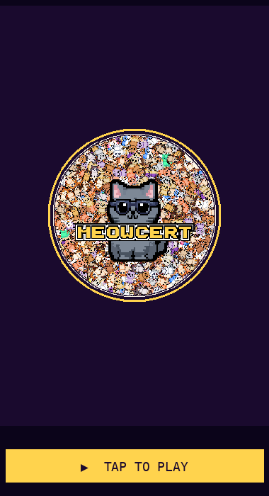

Both surfaces trigger on posts with no chart notes (default seeded subreddit post + any accidental empty publishes). Regenerate with python3 scripts/preview-visit-post-empty.py.
python3 scripts/preview-visit-post-empty.py
